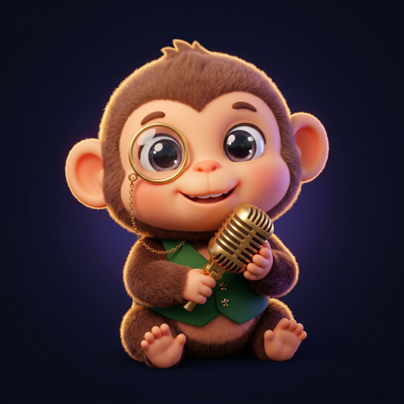

세상엔 물건이 너무 많습니다.
그래서 우리는 '많이'가 아니라 '잘' 고릅니다.
왜 '고른 것만' 보여드릴까
다 파는 곳은 이미 많습니다. 검색창을 열면 같은 물건이 수천 개, 최저가 순으로 줄을 섭니다.
그 줄 세우기는 알고리즘이 제일 잘합니다. 사람이 이길 수 있는 건 '많이'가 아니라 '잘'입니다. 옥동샵은 전 세계에서 소싱한 물건 중, 우리 기준을 통과한 것만 골라 해외구매대행으로 가져옵니다. 늘어놓는 건 알고리즘이 하고, 고르는 건 사람이 합니다.
우리가 물건을 보는 눈 — 편집 기준
진열대에 올리기 전, 모든 물건은 이 네 가지를 통과해야 합니다.
① 수요 검증 — 실제로 찾는 사람이 있는가
② 평점·후기 — 먼저 산 사람들이 만족했는가
③ 가져올 가치 — 국내에 없거나, 있어도 더 나은가
④ 고른 이유 — 왜 이걸 골랐는지 말할 수 있는가
그리고 통과 못 한 건 올리지 않습니다. 부풀린 광고, 모조품 의심, 반응 없는 재고떨이 — 진열대의 자리는 한정돼 있으니까요. 저널에서 무엇을 고르고 무엇을 걸렀는지 계속 공개합니다.
안내를 맡은 옥동이
옥동이 🐵
금색 모노클로 물건을 뜯어보고, 마이크로 '왜 골랐는지'를 이야기하는 옥동샵의 감정사이자 사회자입니다. 감정서를 쓰고, 라이브에서 진행을 맡습니다.
쇼핑이 아니라, 발견
옥동샵은 물건을 '파는 곳'이기 전에 '발견하는 곳'이 되고 싶습니다. 그래서 AI 쇼호스트들이 물건을 걸고 판매를 겨루는 🔥 살아남기, 매주 정해진 시각에 함께 보는 🔴 옥동 라이브, 오늘의 감정 결과를 게임처럼 펼치는 ⚡ 오늘의 발굴을 만듭니다. 재미있게 발견하고, 믿고 사는 것 — 그게 옥동샵의 방식입니다.
🤖 살아남기·라이브의 쇼호스트는 AI 가상 인물이며, 방송은 사전 제작임을 항상 표기합니다.